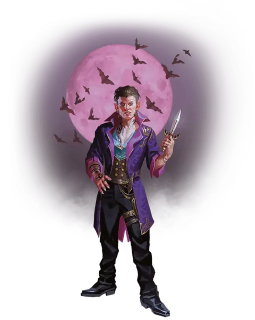

Дампир
Dhampir

Смотрите статью: Происхождения [Lineages]
Оказавшись между миром живых и миром мёртвых, дампиры сохраняют волю к жизни, в тоже время подвергаясь бесконечному испытанию жестоким чувством голода. Связь с нежитью дарит дампирам вкус бессмертного могущества вампира в виде увеличения скорости, тёмного зрения и высасывающего жизнь укуса.
Обладая уникальным пониманием природы нежити, многие дампиры становятся искателями приключений и охотниками на чудовищ. Их часто ведут глубоко личные мотивы. Некоторые ищут опасности, представляя чудовищ олицетворением своего собственного голода. Другие стремятся отомстить тем, кто превратил их в дампира. Третьи же становятся одинокими охотниками, стараясь дистанцироваться от тех, кто искушает их голод.
Голод дампира
Каждый дампир знает, что жажду могут утолить лишь живые. Те, кто злоупотребляют, утоляя свой голод, рискуют потерять контроль и навсегда видеть в других лишь добычу. Те же, кто сопротивляется, могут обнаружить неординарные способы контролировать свои желания или подавлять их с помощью постоянного воздержания вплоть до зубного скрежета. В любом случае, искушение преследует дампиров, и обстоятельства постоянно складываются таким образом, чтобы давать им бесконечные поводы для искушения.
Хотя большинство дампиров жаждет живой крови, ваш персонаж может утолять иной голод. Совершите бросок или выберите самостоятельно один из вариантов таблицы «Голод дампира», чтобы определить, что именно привлекает вашего персонажа в качестве пищи.
Голод дампира
| к6 | Голод |
| 1 | Кровь |
| 2 | Плоть или сырое мясо |
| 3 | Спинномозговая жидкость |
| 4 | Психическая энергия |
| 5 | Сны |
| 6 | Жизненная сила |
Происхождение дампира
Дампиры часто появляются в результате столкновений с вампирами, но всевозможные ужасные сделки, влияние некромантов и встречи с таинственными бессмертными могли изменить вашего персонажа. Таблица «Происхождение дампира» содержит рекомендации к тому, как ваш персонаж смог получить своё наследие.
Происхождение дампира
| к8 | Происхождение |
| 1 | Вы — реинкарнация предка, который был вампиром-тираном. |
| 2 | Ваш договор с кровожадным божеством, исчадием, феей или духом заставляет вас разделять его голод. |
| 3 | Вы пережили нападение вампира, но навсегда изменились. |
| 4 | Внутри вас живёт паразит. Вы утоляете его голод. |
| 5 | Какое-то происшествие прервало ваше превращение в бессмертного. |
| 6 | Вы — ослабленная форма потустороннего существа. Утоление голода ускоряет ваше возвращение. |
| 7 | Один из ваших родителей был вампиром. |
| 8 | Радикальный эксперимент изменил ваше тело, заставив вас зависеть от других людей в получении жизненно важных жидкостей. |
Дампиры в Доменах Ужаса
При создании дампира обсудите со своим Мастером, имеет ли смысл, чтобы ваш персонаж был связан с одним из следующих Доменов Ужаса (подробно описанных в главе 3):
Баровия. В тени замка Равенлофт процветают легенды о тех, кто влюблён в вампиров или происходит от них. Вы можете иметь подобную связь, но вы страшитесь того, что произойдёт, если другие в вашем замкнутом сообществе узнают об этом.
Даркон. Каргат, тайная полиция этого разрушенного домена, предположительно знает секрет бессмертия. Возможно, вы присоединились к ним и прошли через их младшие чины, известные как Каргатан, и вас наградили, превратив в дампира.
И'Кат. Ночью голодающий город И Кат наводняется вампирами цзянши [jiangshi]. Вы очнулись с утолённым чувством голода после встречи с одним из этих беспокойных предков.
Особенности дампира
Вы обладаете следующими расовыми особенностями:
Увеличение характеристик. Либо значение одной характеристики по вашему выбору увеличивается на 2, а другой — на 1, либо значение трёх различных характеристик по вашему выбору увеличивается на 1.
Вид существа. Вы Гуманоид.
Размер. Ваш размер — Маленький или Средний. Вы сами решаете, какого размера будете, когда получаете это происхождение.
Скорость. Ваша базовая скорость ходьбы составляет 35 футов.
Наследие предков. Если вы заменяете расу данным происхождением, вы можете сохранить следующие элементы выбранной расы: любые навыки, которые вы от неё получаете, и любую скорость лазания, полёта или плавания, которую вы от неё получаете.
Если вы не оставляете ни один из этих элементов или выбираете это происхождение при создании персонажа, вы получаете владение двумя навыками по вашему выбору.
Тёмное зрение. На расстоянии 60 футов вы при тусклом освещении можете видеть так, как будто это яркое освещение, и в темноте так, как будто это тусклое освещение. В темноте вы не можете различать цвета, только оттенки серого.
Природа нежити. Вам не нужно дышать.
Паучье лазание. Вы получаете скорость лазания, равную вашей скорости ходьбы. Кроме того, на 3-м уровне вы получаете возможность перемещаться вверх, вниз и вдоль вертикальных поверхностей, а также по потолкам, оставляя руки свободными.
Укус вампира. Ваш укус клыками — это природное оружие, которое считается простым рукопашным оружием, которым вы владеете. Вы добавляете ваш модификатор Телосложения вместо модификатора Силы для бросков атаки и урона для атак, совершаемых этим укусом. Атака наносит 1к4 колющего урона при попадании. Если у вас не достаёт половины и более ваших хитов, вы совершаете с преимуществом броски атаки вашим укусом.
Когда вы атакуете этим укусом и попадаете по существу, которое не является Конструктом или Нежитью, вы можете усилить себя одним из следующих способов по вашему выбору:
- Вы восстанавливаете хиты, равные колющему урону, который вы нанесли укусом.
- Вы получаете бонус к следующей проверке характеристики или броску атаки, который вы совершаете. Бонус равен колющему урону, который вы нанесли укусом.
Вы можете усилить себя данным укусом количество раз, равное вашему бонусу мастерства, и вы восстановите все израсходованные применения после окончания продолжительного отдыха.
Языки. Ваш персонаж может говорить, читать и писать на Общем и ещё одном языке, который по вашему мнению подходит для персонажа.